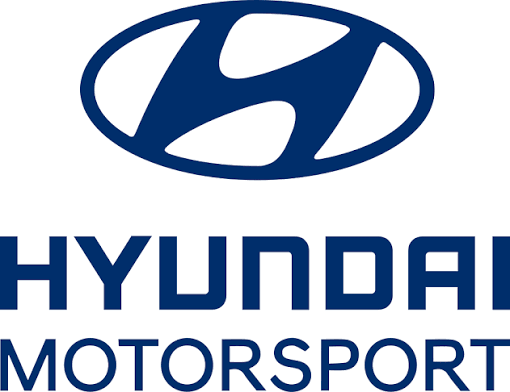
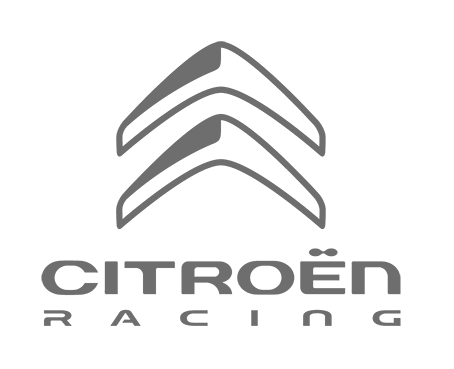

Заводські гіганти
Провідні команди


Toyota Gazoo Racing
Домінуюча команда сучасної ери WEC та багаторазовий переможець Дакара і WRC.
2015Заснування
5×Ле-МанТитули


Hyundai Motorsport
Динамічна команда, що вивела корейський автоспорт на вершину світового ралі.
2012Заснування
Чемпіон WRCТитули

M-Sport Ford
Приватна британська команда, що представляє Ford у World Rally Championship десятиліттями.
1979Заснування
Чемпіон WRC (команди)Титули


Citroën Racing
Команда, що домінувала в WRC в еру Себастьєна Льоба на початку 2000-х.
1998Заснування
8×Чемпіон WRC (команди)Титули